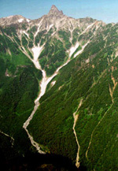

|  |
Hiking Advice
To help you get started, John Payne (co-founder
of the TWMC, and the first secretary) put together a whole heap
of stuff concerning hiking and safety information, as well as
advice for hiking gear. Please read the hiking and safety guidelines
before joining the TWMC, and don't forget to read the disclaimer!
|